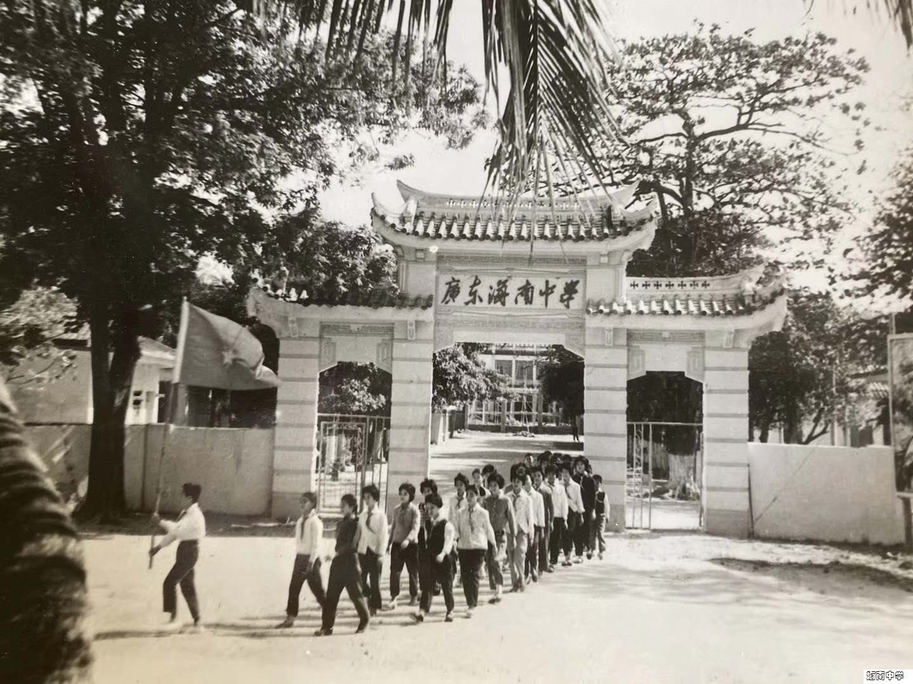
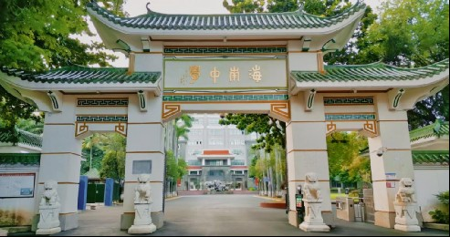
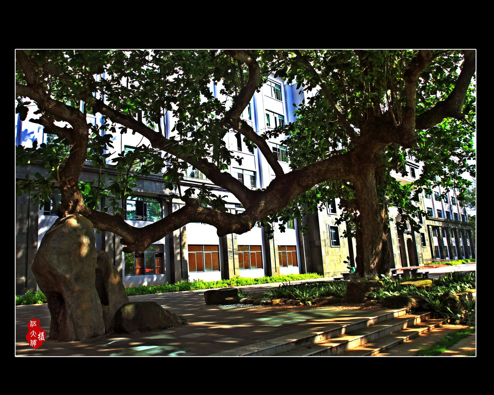

01开场 · 初遇
海南中学府城校区一号教学楼前，一棵百年榄仁树与太湖石「虎踞龙盘」相互呼应。这是它的数字化身：冬末，去年的红叶还挂在枝头。向下滚动，绕着它走，看它抽枝、发芽、展叶，也走进 HAIZ 的每一个角落。
一棵树，连接所有可能
Terminalia catappa L.大叶榄仁 · 使君子科海南中学府城校区 · 一号教学楼前
Scroll ↓绕树而行：滚动、下滑或按空格键
树为依物种特征创作的概念模型；太湖石依校园实拍重建。都不是测绘
02沿树干向上 · 根脉
走到树下，贴着树干往上看。从 1923 年的树根开始，一百年的校史沿着树干、越过分杈、顺着长枝一节节亮起来；走到枝梢，就是今天正在长出的新叶。每一条都写明出处；找不到史料的年份，就空着。
根脉 · 来处
02根脉 · 来处
树皮上的光影是镜头的表达，不是年轮也不是史料；出处与可信度在每一条里注明
1923
1923 年 8 月，冯官尧、王国宪、韩卓秦、钟衍林等 13 名教育界知名人士决定在海府地区筹备创校，定名「私立琼海中学」；同年 9 月正式开学。
开学之初，学校借府城苏泉书院为临时校址，钟衍林任首任校长。
史料 · 多个公开来源一致｜出处：《海南日报》2023-10-30「一所中学的一个世纪 百年海中恰芳华」；维基百科「海南中学」条目；海南中学官网《学校简介》
1924
据百度百科与本站「学校与空间」页的整理，1924 年学校迁至府城西门外大路街，以五贤祠为课室，并在西门外另建校舍。
今天的府城校区位于海口市琼山区大路街。1924 年的具体校址与今天校园的关系，本站尚未找到更直接的史料。
史料 · 单一来源，待核｜出处：百度百科「海南中学」条目；本站「学校与空间」页的时间线（原仓库依据学校简介、海南日报及政府网整理）
1938—1946
1938 年广州沦陷后，校董会设立「琼海中学香港分校」。1939 年 2 月日军占领琼崖，本部停办。
1941 年底太平洋战争爆发、香港沦陷，香港分校被迫停办，师生辗转各地。1946 年，学校回迁复校。
画面左边，那根长枝向水面低垂、又重新抬起——这是镜头的比喻，不是史料。
史料 · 单一来源，待核｜出处：维基百科「海南中学」条目
1950—1953
1950 年海南解放，学校由军管会接管，由私立改为公办；琼南中学、匹瑾女子中学、建华中学先后并入。
其后学校曾隶属海南师范学院、海南师范专科学校，作为附属中学。1953 年，广东省教育厅将学校定名为「广东海南中学」。
史料 · 多个公开来源一致｜出处：维基百科「海南中学」条目；百度百科「海南中学」条目
1959
1959 年，广东海南中学被确定为广东省首批重点中学之一。
史料 · 单一来源，待核｜出处：百度百科「海南中学」条目
1953—1988 间

画面右下角有「海南中学」水印；拍摄者、原始出处与转载授权待确认。门楼题「广东海南中学」——这一校名在 1953 年至 1988 年间使用，所以照片大概率摄于这三十多年之间；具体年份不详。
画面里，系红领巾的学生跟着一面旗走出校门。人物身份、活动内容都无从考证，本站不做推测。
照片 · 年代由画面推断
1959—1988
公开资料提到学校在这段时间里还经历过停办与复办，但本站没有查到可靠的起止年份，因此不写。镜头从枝上往下看：树下的地面上，只落着一个空的光框。
如果你有带日期与出处的资料、旧照片，或愿意署名分享的回忆，欢迎通过「关于本站」联系我们。这段树干会等它们。
留白 · 没有找到可核实的资料
1988

本项目既有照片；拍摄年份、拍摄者与转载授权待确认。1988 年 4 月 26 日海南省委、省政府挂牌成立，学校随之由「广东海南中学」更名为「海南省海南中学」，简称「海南中学」，沿用至今；并被确定为直属海南省教育厅领导的省重点中学。
今天府城校区的门楼上写着「海南中学」。它与老照片里那座门楼是否为同一座、是否经过重建，本站没有核实。
史料 · 多个公开来源一致｜出处：维基百科「海南中学」条目；百度百科「海南中学」条目
2013
2013 年 11 月 1 日前后，学校举行建校 90 周年活动，人民网等媒体作了报道。
本站校园资料记载，2013、2015、2018 年学校先后进行了三次校园景观改造。衍林堂为纪念创办人钟衍林而建，堂前立有「春风化雨」铜像（铜像落成年份本站尚未核实）。
史料 · 多个公开来源一致｜出处：人民网 2013-11-01「海南中学建校90周年 获赞海南基础教育的一面旗帜」；海南中学官网「【90周年校庆专题】海南中学九十年 一路风雨铸辉煌」；本站校园空间资料（assets/walk/campus.json、data/buildings.json）
2015
 画面署名「区大伟 摄」；拍摄年份与转载授权待确认。
画面署名「区大伟 摄」；拍摄年份与转载授权待确认。2015 年的校园景观改造形成「一池两馆三园」的格局：砚池；设在一号教学楼一层的校史馆与国粹馆；学园、行园、思园。
一号教学楼正是这棵榄仁树所在的地方。
本站资料 · 原始出处待补｜出处：本站校园空间资料（assets/walk/campus.json、data/buildings.json）
2023

画面署名「区大伟 摄」；拍摄年份与转载授权待确认。2022 年 11 月 1 日，学校启动建校 100 周年纪念活动；2023 年 11 月 1 日，海南中学迎来百年华诞。
2023 年 10 月 30 日的《海南日报》以府城校区里的一棵百年榄仁树开篇：「树木是有记忆的，它的故事记录在年轮里。」HAIZ 的这棵数字树，就是照着一号教学楼前那棵榄仁树创作的概念模型——树龄未经年轮测定。
史料 · 多个公开来源一致｜出处：《海南日报》2023-10-30「一所中学的一个世纪 百年海中恰芳华」；海南省人民政府网 2023-11-01「赓续百年荣光 顺潮奋楫远航——写在海南中学建校100周年之际」；人民网·海南频道 2022-11-01「海南中学启动建校100周年纪念活动」
从这里出发
学校官网《学校简介》写到的校友，有开国少将马白山，运动员韦海英、王崇升，教育家何勇、吴坚，企业家戴珊，参与执导杭州亚运会闭幕式的艺术家黄春瀚彬，科研工作者谢周清、黄明欣、张继焦等。
本站只摘录官网原文的姓名与身份，不推断他们在校的年份，也不代拟引语。
史料 · 学校官网原文｜出处：海南中学官网《学校简介》
今天
从这里开始，是校园里正在发生的事——第三幕「青春 · 生长」。
个人记忆：目前还没有经本人授权的投稿，所以这棵树上没有一条。将来加入的每一条，都会写明作者、日期和授权，并与校史分开标注。
个人记忆 · 作者授权
03新叶 · 青春生长
新叶对折着展开，逆光里能看见每一条叶脉。第二幕走过的是来处；这里是正在长出来的东西：同学们的照片、文字、声音，和还在找伙伴的计划。愿意的话，走进树冠去找——每一件公开的作品，都是这棵树上的一片叶子。
青春 · 生长
03青春 · 生长
作品树冠正在开发：尚未接入投稿与审核，树上暂无公开作品；开发预览中的示例均标注为虚构。来处三项在第二幕整合前暂留此处
04俯瞰树冠 · 地图
升到树冠上方，树影落在浅水上，像一张摊开的地图。校园也有它的平面：手绘的校园图、三处可以慢慢走的地点，和写给来访者的指引。
地图 · 空间
04地图 · 空间
校园手图沿用项目既有平面数据，为近似表达
05透过树冠 · 远眺
从叶丛里向外望，远处是水面与正在落下的光。那些正在发生、将要发生的事：校园杂志、社团提案、课间电台，和一间可以寄出课间的暗房。
日子 · 创作
05日子 · 创作
远景为艺术表达，不是校园实景
06全盛 · 共同生长
它终于枝繁叶茂，整个 HAIZ 都长在这棵树上：课间的小工具、随身的 Pocket、你在树下接住的叶子，和全站的每一个入口。
工具 · 全部
06工具 · 全部
落叶前转红、春季抽新叶，见植物学资料；书页只保存在这台设备上